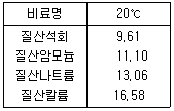

농림토양평가관리산업기사 (2005-05-29 기출문제)
1과목: 토양학
1. 간척지 토양의 특성을 설명한 것이 아닌 것은?
- 알칼리성 토양이다.
- 유기물함량이 일반 논에 비해 낮다.
- 염분농도가 낮다.
- 비전도도가 매우 높다.
(정답률: 알수없음)

2. 높이 5cm, 내경 4cm인 금속 실린더를 양토(loam)에 박은 후 이를 채취하여 오븐에서 건조시킨 후 무게를 재니 80g이었다. 이 토양의 전용적밀도(bulk density)는 얼마인가?(단, 원주율은 3으로 계산)
- 2.66 Mg/m3
- 0.33 Mg/m3
- 1.33 Mg/m3
- 1.00 Mg/m3
(정답률: 알수없음)
3. 우리나라의 토양 침식 작용이 많은 지역이나, 공사로 인해 생성되는 절개지에 주로 나타나는 토양의 목(order)은 다음 어디에 해당하는가?
- Entisols
- Mollisols
- Spodosols
- Andisols
(정답률: 알수없음)
4. 형태학적 토양분류체계(Soil taxonomy)에는 12가지 명칭의 목(Order)이 있다. 토양 목의 명칭이 아닌 것은?
- Entisol
- Mollisol
- Oxisol
- Latosol
(정답률: 알수없음)
5. 미생물이 고등식물에 끼치는 유해 작용이 아닌 것은?
- 질산염의 환원과 탈질작용
- 황산염의 환원
- 고등식물과 미생물과의 양분 경쟁
- 미생물간의 길항작용
(정답률: 알수없음)
6. 다음 식물체 중 탄질율(C/N율)이 가장 큰 것은?
- 감자
- 알팔파
- 완두
- 밀짚
(정답률: 알수없음)
7. 다음 모재 중 다른 셋과 생성기작이 다른 것은?
- 충적토(alluvial)
- 붕적토(colluvial)
- 해성토(marine)
- 호성토(lacustrine)
(정답률: 알수없음)
8. 부식의 기능으로 적합하지 않은 것은?
- 부식은 물을 흡수하는 힘이 크다.
- 부식은 토양미생물의 활동을 활발하게 한다.
- 부식은 양이온치환능력이 점토에 비하면 적은편이다.
- 부식은 토양의 입단화를 촉진시킨다.
(정답률: 알수없음)
9. 다음 중 토양양분의 유효도에 가장 영향을 적게 주는 요인은?
- 토양의 pH
- 토양의 산화환원전위
- 토양 양분함량
- 경지정리상태
(정답률: 알수없음)
10. 검토장(soil auger)의 가장 적합한 용도는 무엇인가?
- 토양시료 채취기
- 토양인산 검출기
- 토양수분 측정기
- 토양산도 측정 키트(kit)
(정답률: 알수없음)
11. 무기질 토양이 산성으로 될 때 주된 역할을 하며, 토양에 함유되어 있는 금속원소로서 토양반응을 산성으로 기울게 하는 것은?
- 칼슘(Ca)
- 수소(H)
- 알루미늄(Al)
- 망간(Mn)
(정답률: 알수없음)
12. 다음 중 토양으로부터 가장 쉽게 탈착되는 이온은?
- H+
- NH4+
- Mg2+
- Ca2+
(정답률: 알수없음)
13. 토양의 풍화작용 중 화학적 풍화에 해당하지 않는 것은?
- 산화작용
- 가수분해작용
- 수화작용
- 온열작용
(정답률: 알수없음)
14. 고상 46%, 액상 25%, 기상 29%로 구성되어 있는 토양이 있다. 이 토양의 공극율(%)은?
- 54
- 46
- 29
- 25
(정답률: 알수없음)
15. 면적이 1ha인 밭토양에서 작토층 두께 20cm의 전체 토양질량을 건조상태에서 계산하면? (단, 건조상태 토양의 용적밀도:1.35 Mg/m3, Mg:mega gram )
- 2.7 × 103 Mg
- 1.35 × 103 Mg
- 2.7 × 102Mg
- 1.35 × 102Mg
(정답률: 알수없음)
16. 토양의 투수력에 영향을 주는 요인과 가장 거리가 먼 것은?
- 토양입자
- 유기물함량
- 토심
- 규산함량
(정답률: 알수없음)
17. 토양 중에 서식하는 조류(algae)에 대한 설명이다. 관계가 가장 먼 것은?
- 단세포로 되어 있다.
- 엽록소를 지니고 있다.
- 세균과 공존하면서 유기물을 공급한다.
- 공중질소를 고정할 수 없다.
(정답률: 알수없음)
18. 토양의 탄질율(C/N비)에 대한 설명으로 옳지 않은 것은?
- 동일 기온하에서 건조지방이 습윤지방보다 크다.
- 일반적으로 경작지 토양에서는 표토가 심토보다 크다.
- 유기물 분해과정에서 질소는 미생물, 리그닌, 점토 등에 의해 보존된다.
- 일반적으로 화본과 작물의 C/N율이 두과작물보다 크다.
(정답률: 알수없음)
19. 추락현상을 나타내는 저위 생산답(논)의 개량법으로 가장 많이 사용되는 방법은?
- 화학비료를 많이 시용할 것
- 휴경기에도 항상 담수를 할 것
- 경운을 자주할 것
- 좋은 품질의 객토를 할 것
(정답률: 알수없음)
20. 미사질 양토의 밭 토양에서 식물생육에 가장 좋은 토양의 고상-액상-기상의 비율(%)로 가장 적합한 것은?
- 20-40-40
- 40-30-30
- 50-25-25
- 60-35-5
(정답률: 알수없음)
2과목: 비료학
21. 토양미생물비료 효과를 연구하기 위해서 무처리, 관행구를 포함한 미생물처리량을 다르게 5구간을 두어 2반복으로 시험구를 배치하였다. 시험구의 배치방법은?
- 완전난괴법
- 완전임의 배치법
- 라틴방격법
- 무계획적인 시험
(정답률: 알수없음)
22. 질소 10kg을 시용하여 재배한 결과, 수확 후 질소 시용구의 작물이 질소를 20kg 흡수하였으며, 무시용구에서는 질소가 16kg이었다면 이 때의 질소 흡수율은?
- 20%
- 40%
- 50%
- 60%
(정답률: 알수없음)
23. 다음 중에서 비료시험의 방법이라고 볼 수 없는 것은?
- 난괴법
- 수경법
- 사경법
- 토경법
(정답률: 알수없음)
24. 시비(施肥)시험의 일환으로 실시하는 적량시험(適量試驗)은?
- 보수점감의 법칙에 준한 증수곡선으로 결정
- 한 작물의 시험 결과로 모든 작물에 적용
- 지역별 시험을 수행할 필요가 없음
- 1년 이상 다년 시험이 불필요함
(정답률: 알수없음)
25. 비료시험 중 생육, 수량조사 및 수확물의 분석방법에 대하여 옳지 못한 것은?
- 벼의 조사 시기는 생육초기, 최고분얼기, 유수형성기, 성숙기, 수확기 등의 각 시기별로 실시한다.
- 초장은 지표면에서 가장 높은 잎 혹은 이삭의 끝가지의 길이를 측정한다.
- 감자, 고구마, 채소류, 과수, 콩 등은 오차가 많지않으므로 유의성을 10% 이하로 보는 것이 좋다.
- 수확물의 분석법은 보통 수분, 전질소, 전인산, 전칼륨 등을 통상법에 의하여 정량한다.
(정답률: 알수없음)
26. 용성인비 25kg의 시장가격이 3000원이다. 인산(P2O5) 1kg의 가격은 얼마인가?
- 400원
- 500원
- 600원
- 700원
(정답률: 알수없음)
27. 퇴비의 시용방법에 대한 설명 중 옳지 않은 것은?
- 퇴비는 원천적으로 밑거름으로 사용하는 것이 좋다.
- 퇴비를 시용한 후에는 즉시 종자를 파종하거나, 묘를 정식하는 것이 필요하다.
- 퇴비성분이 고르게 섞이도록 잘 혼합해야 한다.
- 퇴비시용 후에는 곧 갈아 엎어서 양분의 손실을 방지해야 한다.
(정답률: 알수없음)
28. 다음 비료 중 화학적 산성비료이며, 생리적 중성비료는?
- 황산칼리
- 염화암모늄
- 칠레초석
- 중과린산석회
(정답률: 알수없음)
29. 엽면살포의 이점이 아닌 것은?
- 토양 조건이 나쁜 경우에 유리하다.
- 뿌리가 약화되었을 때 유리하다.
- 비효가 빨리 나타난다.
- 속효성 무기양분의 시용에 좋다.
(정답률: 알수없음)
30. 비료의 반응에 대한 내용 중 맞지 않는 것은?
- 비료의 화학적 반응이란 비료 수용액 상태의 고유한 반응이다.
- 화학비료의 사용은 토양을 모두 산성화 시킨다.
- 비료의 생리적 반응이란 토양 중에서 식물에 의한 흡수작용과 미생물의 작용을 받은 뒤에 나타난 반응이다.
- 유기질비료는 그 화학적 조성이 복잡하며, 토양중에서 일단 분해되어 가용성으로 변화된 후 식물에 흡수 이용된다.
(정답률: 알수없음)
31. 논토양에서 탈질작용으로 질소가 공기중으로 휘산되는 형태가 아닌 것은?
- NO3-
- N2
- NO
- N2O
(정답률: 알수없음)
32. 다음 중 비료효과의 지속에 의해 분류된 비료는?
- 완효성비료
- 유기질비료
- 농후비료
- 희박비료
(정답률: 알수없음)
33. 질소순환에 관여하는 주요미생물로 잘못 짝지어진 것은?
- 질화작용 : 아질산균, 질산균
- 질산환원작용 : 유기영양미생물
- 탈질작용 : 공생질소고정세균, 질산균, 남조류
- 암모니아화성작용 : 대부분의 유기영양미생물
(정답률: 알수없음)
34. 생물 유체의 유기물 중에서 가장 분해되기 쉬운 물질은?
- 납질(蠟質)
- 단백질(蛋白質)
- 수지류(樹脂類)
- 리그닌(lignin)
(정답률: 알수없음)
35. 토양에서 작물이 흡수하는 원소의 형태로 옳지 않은 것은?
- 질소 : NO3-, NH4+
- 황 : S-
- 칼슘 : Ca2+
- 칼륨 : K+
(정답률: 알수없음)
36. 화성비료인 황인산암모늄(질소 : 17.5%, 인산 : 15.0%) 60kg 중에 함유된 질소 및 인산 성분량은?
- 질소(N) : 10.5kg, 인산(P2O5) : 9.0kg
- 질소(N) : 9.5kg, 인산(P2O5) : 8.5kg
- 질소(N) : 9.0kg, 인산(P2O5) : 8.0kg
- 질소(N) : 8.5kg, 인산(P2O5) : 7.5kg
(정답률: 알수없음)
37. 다음의 비료 중 노후화답에 시비하여도 작물에 해가 되지 않는 비료는?
- 과인산석회
- 유안
- 황산칼리
- 요소
(정답률: 알수없음)
38. 다음 중에서 구용성 인산이 가장 많이 들어 있는 인산질비료는?
- 인산암모늄
- 과인산석회
- 용성인비
- 질산암모늄
(정답률: 알수없음)
39. 다음 표는 비료수용액의 수증기 분압(단위:Hgmm)을 나타낸 것이다. 표를 보고 비료를 흡습성이 큰 것에서 작은 것 순서로 바르게 나열한 것은?

- 질산석회, 질산암모늄, 질산나트륨, 질산칼륨
- 질산석회, 질산나트륨, 질산칼륨, 질산암모늄
- 질산암모늄, 질산석회, 질산칼륨, 질산나트륨
- 질산칼륨, 질산나트륨, 질산암모늄, 질산석회
(정답률: 알수없음)
40. 우리나라의 비료공정규격상 부산물비료에 속하지 않는 것은?
- 퇴비
- 분뇨잔사
- 커피박
- 부엽토
(정답률: 알수없음)
3과목: 재배학원론
41. 식물호르몬 중 작물의 세포분열을 촉진하며, 잎의 생장촉진, 호흡억제, 엽록소와 단백질의 분해억제, 노화방지 등의 효과가 있는 것은?
- 오옥신류(auxins)
- 지베렐린(gibberellin)
- 사이토카이닌(cytokinins)
- 플로리겐(florigen)
(정답률: 알수없음)
42. 다음 중 춘화처리와 일장처리의 감응부위를 순서대로 바르게 쓰여진 것은?
- 성엽, 생장점
- 줄기, 성엽
- 뿌리, 생장점
- 생장점, 성엽
(정답률: 알수없음)
43. 다음 중 식물과 작물 분류의 기본단위가 순서대로 쓰여진 것은?
- 종, 계통
- 속, 변종
- 종, 품종
- 속, 품종
(정답률: 알수없음)
44. 다음 중 작물생육에 적당하지 않은 토양 수분상태는?
- 최대용수량
- 최소용수량
- 수분당량
- 포장용수량
(정답률: 알수없음)
45. 다음 식물이 영양기관을 이용해서 번식하는 이유로 가장 옳은 것은 ?
- 차대에 다양한 변이 발생
- 모수의 유전형질을 차대에 계승
- 종자생산이 용이함
- 작업이 간편함
(정답률: 알수없음)
46. 작물 수량을 지배하는 3요소로 가장 적당한 것은?
- 유전성, 환경조건, 재배기술
- 유전성, 환경조건, 유통시장
- 유전성, 지대, 자본
- 환경조건, 재배기술, 토지자본
(정답률: 알수없음)
47. 다음 중 도복 대책으로 적절하지 않는 것은?
- 밀식재배
- 내도복성 품종 선택
- 배토 후 답압
- 균형시비
(정답률: 알수없음)
48. 다음 중 일반적으로 내습성이 강한 작물의 특성이 아닌 것은?
- 피층세포의 직렬 배열
- 파생 통기조직의 형성
- 뿌리조직의 목화(木化)
- 심근성의 근계 형성
(정답률: 알수없음)
49. 가을 감자 재배시 가장 효과적인 휴면타파 방법은 ?
- 2 ~ 5ppm 지베렐린 수용액에 30 ~ 60분 처리
- 2 ~ 5ppm 지베렐린 수용액에 24시간 처리
- 250 ~ 500ppm 지베렐린 수용액에 60분 처리
- 250 ~ 500ppm 지베렐린 수용액에 24시간 처리
(정답률: 알수없음)
50. 식물의 생장조절제 중에서 과일의 성숙을 촉진하는 것은?
- Auxin
- Gibberellin
- Cytokinin
- Ethylene
(정답률: 알수없음)
51. 병해충 방제에서 기계적 방제법이 아닌 것은?
- 소각
- 중간기주 식물의 제거
- 담수
- 온도처리
(정답률: 알수없음)
52. 다음 중 가장 낮은 농도에서 피해를 일으키는 대기오염 물질은?
- SO2
- HF
- PAN
- O3
(정답률: 알수없음)
53. 다음 중 요수량(要水量)이 가장 큰 작물은?
- 기장
- 감자
- 귀리
- 호박
(정답률: 알수없음)
54. C/N율(C-N ratio)의 설명으로 가장 바르게 된 것은?
- 탄수화물보다 광물질양분이 풍부하면 화성 및 결실이 양호하다.
- 탄수화물과 다른 양분이 동시에 풍부하면 화성 및 결실이 양호하다.
- 수분과 질소의 공급이 약간 쇠퇴하고 탄수화물이 풍부해지면 화성 및 결실이 양호하지만 생육은 약간 감소한다.
- C/N율은 화성 유도의 주요 외적 요인이다.
(정답률: 알수없음)
55. 겨울철 작물의 내동성을 높이는 요인이 아닌 것은?
- 지방 함량이 적다.
- 당분 함량이 높
- 세포의 수분함량이 낮다.
- 칼슘, 마그네슘 함량이 많다.
(정답률: 알수없음)
56. 다음 벼의 이상적인 초형(Plant type)으로 가장 거리가 먼 것은?
- 상위엽일수록 직립한다.
- 이삭이 지엽 밑에 위치한다.
- 각 잎이 공간적으로 균일하게 분포되어야 한다.
- 엽초가 길어야 한다.
(정답률: 알수없음)
57. 모체의 영양체 일부를 절단하여 적당한 곳에 심어서 뿌리를 내어 번식시키는 것은?
- 삽목
- 분주
- 취목
- 접목
(정답률: 알수없음)
58. 일정한 간격을 두고 종자를 일에서 수립씩 뛰엄뛰엄 파종하는 방식으로 두류, 감자 등과 같이 개체가 평면공간으로 상당히 퍼지는 작물에 적용되는 파종양식은?
- 적파
- 조파
- 점파
- 산파
(정답률: 알수없음)
59. 식물영양에 대한 무기영양설을 주장한 사람은?
- Koelreuter
- Mendel
- Morgan
- Liebig
(정답률: 알수없음)
60. 다음 중에서 장일성 작물로 짝지어진 것은?
- 시금치, 감자, 양파
- 담배, 들깨, 코스모스
- 당근, 고추, 토마토
- 딸기, 사탕수수, 메밀
(정답률: 알수없음)
4과목: 분석화학기초
61. 다음 중 가장 강한 산화제는?
- Zn+2 + 2e → Zn (E0 = -0.76 V)
- Cu+2 + 2e → Cu (E0 = +0.34 V)
- Fe+2 + 2e → Fe (E0 = +0.44 V)
- Cd+2 + 2e → Cd (E0 = -0.40 V)
(정답률: 알수없음)
62. 4g의 고체 수산화나트륨(NaOH 분자량 = 40g)이 녹아있는 수용액 1.0L 의 몰농도(M)는?
- 1.0 M
- 0.1 M
- 0.01 M
- 10.0 M
(정답률: 알수없음)
63. 다음 각 반응 중 반응용기의 부피를 감소시켰을 때, 평형이 오른쪽으로 이동하는 것은?
- N2(g) + 3H2(g) ↔ 2NH3(g)
- H2(g) + F2(g) ↔ 2HF(g)
- PCl3(g) + 3NH3(g) ↔ P(NH2)3(g) + 3HCl(g)
- COCl2(g) ↔ CO(g) + Cl2(g)
(정답률: 알수없음)
64. 다음 중 분광분석법과 가장 거리가 먼 것은?
- 원자흡수분광법
- 형광분석법
- 광회절분석법
- 침전법
(정답률: 알수없음)
65. 당량점과 종말점에 대한 설명 중 틀린 것은?
- 종말점은 지시약으로 구별한다.
- 종말점은 실험값이다.
- 당량점과 종말점은 항상 같다.
- 당량점은 이론적인 값이다.
(정답률: 알수없음)
66. 화학 실험에서 10㎖의 용액을 가장 정확하게 취하려면 어느 기구를 사용해야 하는가?
- 메스실린더(mess cylinder)
- 피펫(pipette)
- 스포이드(spoid)
- 메스플라스크
(정답률: 알수없음)
67. 다음 가운데 망간의 산화수가 +6인 것은?
- MnSO4
- MnO2
- KMnO4
- K2MnO4
(정답률: 알수없음)
68. 반응속도가 느려서 직접 적정할 수 없을 때 과량의 반응시약을 가하여 반응에 소요되고 남은 부분을 적정하는 방법은?
- 직접 적정법
- 역적정법
- 치환적정법
- 간접적정법
(정답률: 알수없음)
69. 다음 중 햇빛을 쪼이거나 구리 조각을 넣으면 적갈색 기체를 발생하는 것은?
- 진한 황산
- 묽은 황산
- 진한 질산
- 묽은 질산
(정답률: 알수없음)
70. 다음 중 일양성자 산으로 알맞은 것은?
- H3PO4
- H2SO4
- H2CO3
- HCl
(정답률: 알수없음)
71. AgCl의 용해도곱상수(Ksp)가 x일 때 AgCl의 용해도는 얼마인가?
- x2
- x
- √x
- 1/x
(정답률: 알수없음)
72. 산화-환원 반응에 대한 설명 중 옳지 않은 것은?
- 산화-환원 반응은 전자가 한 화학종에서 다른 화학종으로 옮아가는 것을 의미한다.
- 전자를 잃었을 때 산화되었다고 하고, 전자를 얻게되면 환원되었다고 한다.
- 산화제는 다른 물질을 산화시키고 자신도 산화되는 것을 말한다.
- 환원제는 다른 물질에게 전자를 주어 환원시키는 물질을 말한다.
(정답률: 알수없음)
73. 0.2M K2Cr2O7 500㎖를 조제하려고 한다. 0.25M K2Cr2O7가 얼마나 필요한가?
- 200㎖
- 250㎖
- 400㎖
- 150㎖
(정답률: 알수없음)
74. 열량, 일 등에 사용되는 줄(J)을 SI 기본단위로 표시하면 다음 어느 것인가?
- m2ㆍkg ㆍs-2
- mㆍkg ㆍs-2
- s ㆍ A
- 1/s
(정답률: 알수없음)
75. 0.1M-KOH 수용액의 pH는 얼마인가?
- 1
- 6
- 8
- 13
(정답률: 알수없음)
76. Henderson-Hasselbalch 공식을 바르게 나타낸 것은?
- pH = pKa + log [염기]/[산]
- pH = pKa + log [산]/[염기]
- pKa = pH + log [염기]/[산]
- pKa = pH + log [산]/[염기]
(정답률: 알수없음)
77. 다음 중 1M NaOH를 만드는 과정으로 알맞은 것은?
- NaOH 1mol에 해당하는 g수를 칭량하여 잘 녹여서 1L로 맞추었다.
- NaOH 1mol에 해당하는 g수를 칭량하여 물 1L에 잘 녹였다.
- NaOH 1g을 칭량하여 잘 녹여서 1L로 맞추었다.
- NaOH 1g을 칭량하여 물 1L에 잘 녹였다.
(정답률: 알수없음)
78. 침전과정에서 침전의 용해도에 관한 다음 설명 중 가장 옳은 것은?
- 침전의 용해도는 용액의 온도를 올리면 감소된다.
- 침전의 용해도는 용액의 온도를 내리면 감소된다.
- 침전의 용해도는 사용되어지는 용매에 관계없다.
- 침전의 용해도는 항상 일정하다.
(정답률: 알수없음)
79. 다음 화합물 중에서 페놀프탈레인 용액을 붉게 변화 시킬 수 있는 것은?
- K2CO3
- NH4Cl
- CuSO4
- NaCl
(정답률: 알수없음)
80. 1.0 x 10-2 M 수산화나트륨(NaOH) 용액에 대한 설명 중 맞는 것은?
- 약전해질인 수산화나트륨이 녹아 있는 수용액이다.
- pOH가 12인 약염기성 용액이다.
- 염산용액과 반응해서 침전을 생성한다.
- pH가 12인 염기성 용액이다.
(정답률: 알수없음)